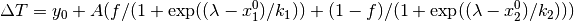
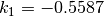
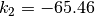

EQSANSResolution dialog.
Table of Contents
| Name | Direction | Type | Default | Description |
|---|---|---|---|---|
| InputWorkspace | InOut | MatrixWorkspace | Mandatory | Name the workspace to calculate the resolution for |
| ReducedWorkspace | Input | MatrixWorkspace | Mandatory | I(Q) workspace |
| OutputBinning | Input | dbl list | Mandatory | |
| MinWavelength | Input | number | Optional | Minimum wavelength to use. |
| MaxWavelength | Input | number | Optional | Maximum wavelength to use. |
| PixelSizeX | Input | number | 5.15 | Pixel size in the X direction (mm). |
| PixelSizeY | Input | number | 5.15 | Pixel size in the Y direction (mm). |
| SampleApertureRadius | Input | number | 5 | Sample aperture radius (mm). |
| SourceApertureRadius | Input | number | 10 | Source aperture radius (mm). |
| DeltaT | Input | number | 250 | TOF spread (microsec). |
This algorithm extends the TOFSANSResolution to implement the experimentally determined TOF resolution for EQSANS.
The Q resolution for a TOF SANS has two components: a geometrical contribution and a contributions from the resolution in TOF.
The TOF resolution for EQSANS was measured to be:

where  is the wavelength and
is the wavelength and




This algorithm is generally not called directly. It’s called by EQSANSAzimuthalAverage1D after the calculation of I(Q). It can only be applied to an I(Q) workspace.
Categories: AlgorithmIndex | SANS
C++ source: EQSANSResolution.cpp (last modified: 2018-10-05)
C++ header: EQSANSResolution.h (last modified: 2018-10-05)
{kind=link}